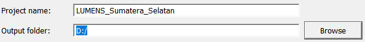

2.2 Pembuatan LUMENS Database
Pembuatan LUMENS Database
Jika pengguna belum memiliki LUMENS database atau belum pernah membuat database sebelumnya, maka langkah pertama sebelum memulai analisis, pengguna perlu membuat LUMENS database.
Gambar 2.6 Jendela Create yang digunakan untuk membuat database baru
Keterangan:
- Project name : Isi dengan nama database yang diinginkan
- Output folder : Lokasi penyimpanan database
- Project boundary : Peta batas kawasan yang akan dianalisis (Tipe file: vector)
- Boundary attribute : Judul tabel, dari file vector batas kawasan yang akan digunakan sebagai atribut
- Description : Catatan mengenai database yang dibuat
- Location : Nama lokasi (desa/kabupaten/kecamatan) database yang akan dibuat
- Province : Nama provinsi database yang akan dibuat
- Country : Nama negara database yang akan dibuat
- Spatial resolution : Resolusi spasial yang diinginkan
- Dissolved : Panel yang akan menampilkan daftar atribut dari file vector batas kawasan
- Browse : Tombol untuk memilih file dan atribut data yang akan digunakan
- Dissolve : Tombol untuk menampilkan atribut data yang akan digunakan
- Create : Untuk memulai pembuatan database
- Help button : Berisi panduan tentang pembuatan LUMENS database
- Mengisi kolom Project name
Isi kolom Project name dengan nama yang diinginkan. Nama file ditulis tanpa menggunakan spasi. Spasi dapat diganti dengan garis bawah maupun strip.
Gambar 2.7 Pengisian kolom Project name
- Mengisi kolom Output folder
Pilih Browse hingga terbuka jendela seperti pada Gambar 2.6, kemudian pilih lokasi penyimpanan database yang akan dibuat. Tampilan kolom Output folder setelah diisi seperti pada Gambar 2.7.
Gambar 2.8 Jendela yang muncul setelah menekan tombol Browse

Gambar 2.9 Tampilan kolom Output folder setelah diisi lokasi penyimpanannya
- Mengisi kolom Project boundary
Pilih Browse hingga terbuka jendela seperti Gambar 2.8. Pilih data batas kawasan (tipe file vector), contohnya data batas kawasan tersimpan di: E:→ LUMENS_data→ 2_Vector→ admin_bound.shp→ kab_SS_48s→ Open (Gambar 2.9)
Gambar 2.10 Data batas kawasan yang digunakan
Gambar 2.11 Tampilan kolom Project boundary setelah diisi
- Mengisi kolom Boundary attribute
Batas kawasan yang akan digunakan pada database, dapat dipilih berdasarkan atribut tabel yang ada di dalam data vector (Project boundary) yang sudah dimasukkan. Pilih ikon → pilih KABKOT atau batas administrasi lain yang akna dianalisis (Gambar 2.10)
Gambar 2.12 Kolom Boundary attribute setelah diisi
- Mengisi kolom Description, Location, Province, dan Country
Keempat kolom tersebut, dapat diisi dengan menuliskan secara langsung pada kolom yang tersedia, sesuai dengan keterangan yang diminta (Gambar 2.11)
Gambar 2.13 Tampilan kolom Description, Location, Province, dan Country yang telah diisi
- Mengisi kolom Spatial resolution
Kolom ini diisi sesuai dengan resolusi peta tutupan lahan dam penggunaan lahan yang akan ditambahkan dalam database dan digunakan untuk analisis. Contohnya resolusi data yang digunakan 100x100, maka kolom Spatial resolution diisi dengan angka 100. Pengisian kolom dapat dilakukan dengan menuliskan secara langung pada kolom atau dengan bantuan tombol  (Gambar 2.12).
(Gambar 2.12).
Gambar 2.14 Tampilan kolom Spatial resolution yang telah diisi
- Dissolve
Proses ini digunakan untuk menampilkan daftar atribut data yang ada pada peta batas kawasan yang telah di tambahkan. Tekan tombol yang ada pada bagian kanan bawah jendela Create. Tunggu hingga proses selesai dan muncul jendela seperti Gambar 2.13, tutup jendela tersebut. Hasil dissolved dapat dilihat pada panel Dissolved (Gambar 2.14).
Gambar 2.15 Jendela yang menunjukkan proses Create Database telah berhasil dibuat
Gambar 2.16 Daftar batas kawasan atau wilayah administrative dari hasil Dissolved
- Create LUMENS database
Setelah memastikan data batas kawasan administrative sesuai, proses selanjutnya adalah create database, dengan menggunakan tombol . Tunggu hingga proses selesai dan muncul jendela seperti pada Gambar 2.13, tutup jendela dan hasil LUMENS database telah aktif. Database LUMENS yang telah aktif dapat dilihat pada kolom Project status (Gambar 2.15).
Gambar 2.17 Folder LUMENS database telah berhasil dibuat dan telah aktif
- Hasil keluaran Create LUMENS database
Setelah proses pembuatan database selesai, akan terbentuk satu folder yang digunakan sebagai lokasi penyimpanan seluruh hasil analisis LUMENS yang menggunakan file database tersebut.

Gambar 2.18 Folder hasil analisis LUMENS
Created with the Personal Edition of HelpNDoc: News and information about help authoring tools and software